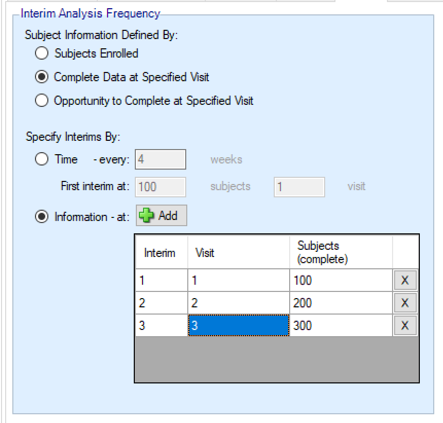
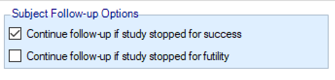

Interims
Description of the Design > Interims tab.
1 Interims
Interim analyses allow for decision making throughout the lifecycle of an adaptive trial in FACTS. Interim analyses can adjust allocation probabilities, drop arms, or allow for early success/futility of the trial. Interims can either be specified with calendar frequency – occurring every specified number of weeks or specified to occur after a specified amount of information has been collected.
1.1 Interim Analysis Triggers
1.1.1 Continuous and Dichotomous Endpoint
Information can be defined in terms of:
number of subjects that have been recruited
the number of subjects who have actually completed a specified visit
the number of subjects who have had the opportunity to complete a specified visit (includes drop-outs)
When specifying an interim analysis schedule, it can be done either based on time or based on one of the information categories above.
If specifying interims based on time the first interim analysis timing must be based on information, and each subsequent interim is triggered after the provided amount of time has elapsed. If accrual completes before the first interim threshold is reached, and the first interim was defined in terms of the number of subjects enrolled, then the interims by time start at full accrual. If the first interim is defined in any other terms (by events, subjects complete or subjects with opportunity to complete) then interims only start when this is reached (which might be never).
If specifying interims based solely on information, the table on the “Interims” tab determines when the analyses will be triggered. Each interim is defined individually by the number of patients/observations that have satisfied some criteria. If information is If information is defined as Subjects Enrolled, then interim are triggered immediately upon enrollment of the subject satisfying the criteria. If information is defined as completers or opportunity to complete, then interims are triggered immediately upon the visit being reached that satisfies the specified criteria. Successive interims must be in terms of the same or more observations at the same or later visit, and either Visit or Subject must increase. Different types of information cannot be mixed to trigger interim analyses except in using time to trigger interims after the first based on information.

If interims are governed by time, there is the option as to whether interims should continue after full accrual, or discontinue.
1.1.2 Time-to-Event Endpoint
Information can be defined in terms of:
number of subjects that have been recruited
the number of subjects who have observed their predictor endpoint
the number of subjects who have had the opportunity to observe their predictor endpoint (includes drop-outs)
specified numbers of events observed
specified number of predictor events observed
Outside of the new types of information, the time-to-event triggers work in exactly the same way that continuous and dichotomous triggers do.
1.2 Subject Follow-up Options
Regardless of endpoint, the Interims tab contains options that control the behaviour should a trial stop at an interim analysis. The options allows the user to specify whether or not to complete the follow-up of subjects who have been accrued, but have not had time to observe their final endpoint.
The default options available for Subject Follow-Up are:
Continue follow-up if study stopped for early success
Continue follow-up if study stopped for early futility
If the check box corresponding to an interim decision is checked, then at the time of an interim analysis decision - accrual will be stopped, all subjects currently enrolled will be followed-up until they have had the opportunity to observe their final endpoint, and then the final analysis will be performed.
If the check box corresponding to an interim decision is not checked, then at the time of an interim analysis decision - accrual is stopped, the data is locked, and no follow-up on randomized patients is collected. The interim dataset is the final dataset. The final analysis is then performed using the same data and model as was used for the interim analysis.

If the allocation method is selected as, “Arm Dropping,” then an additional check box is provided in the Subject Follow-up Options box asking whether the user would like to “Continue follow-up if arm dropped.” If the box is checked, then subjects randomized to an arm that is dropped before they have the opportunity to complete their follow-up will have to opportunity to observe their final endpoint for subsequent analyses. If the box is not checked then incomplete subjects on an arm that is dropped will never have future endpoint values observed.